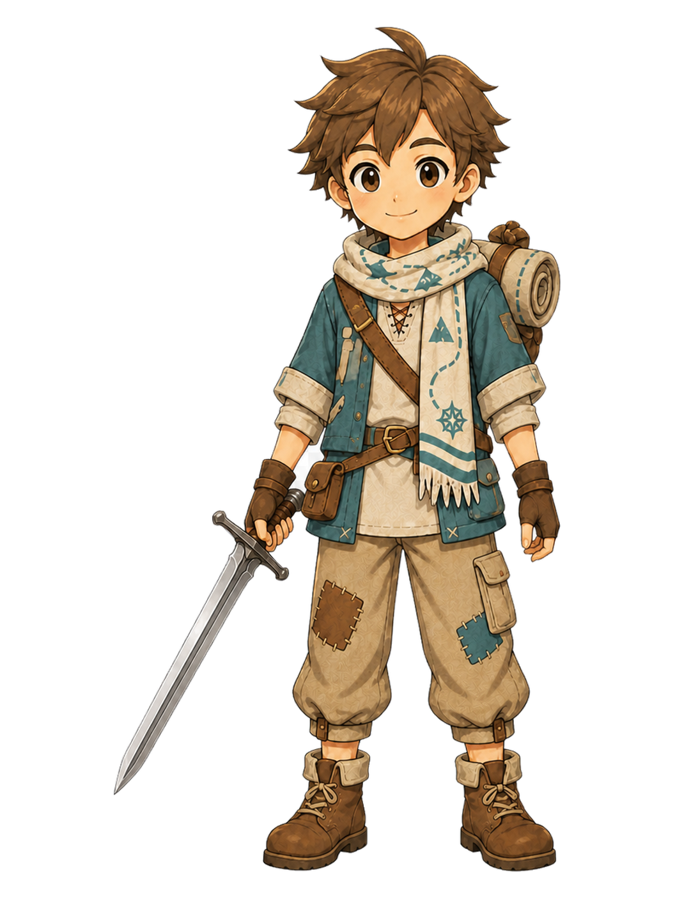
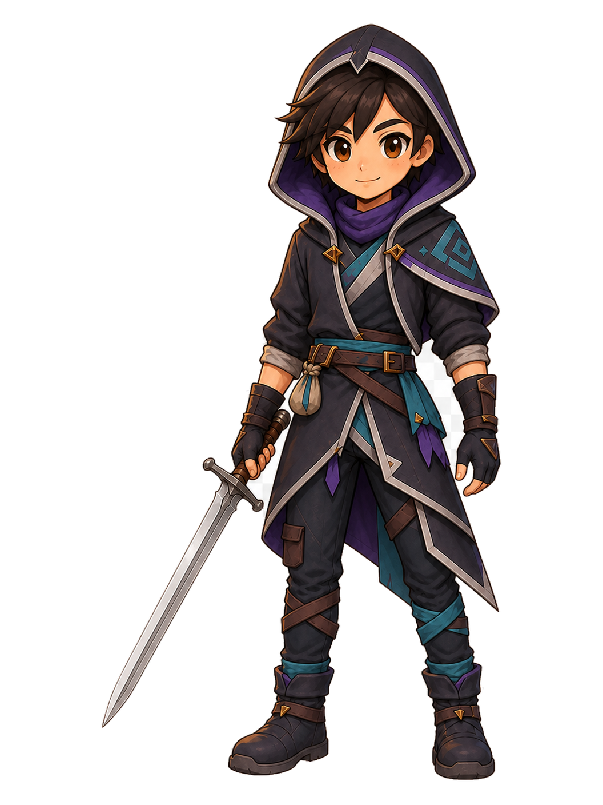
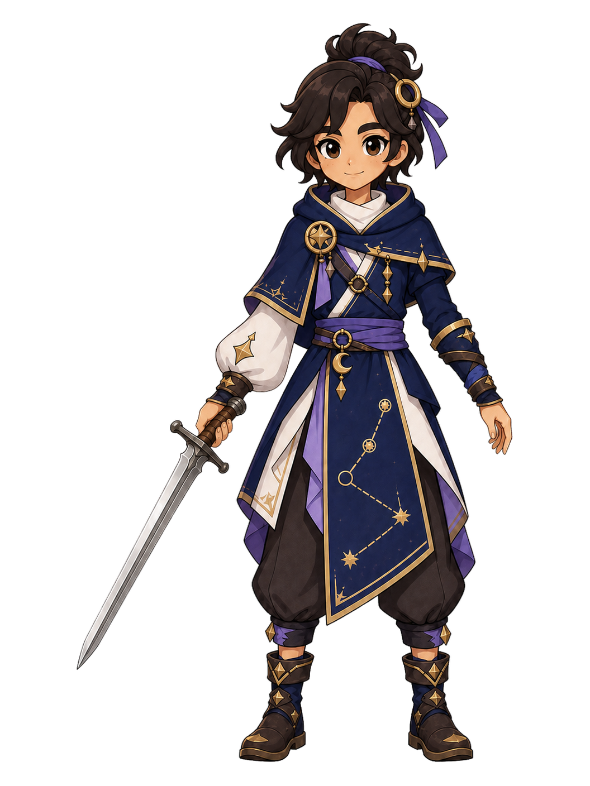

Apprentice


APPROVED PURE SWORD POSE · universal iron_sword · presentation-only
Three complete full-body redraws for Trail Apprentice, Night Runner, and Constellation Apprentice are shown beside the approved Apprentice, Mage, and Paladin sword-pose results.
player_inventory; functional effects remain server EQUIPMENT_DEFS; pose selection is PRESENTATION_ONLY; client combat authority is NO. No runtime roster, combat, database, or equipment asset was changed.APPROVED PURE SWORD POSE · universal iron_sword · presentation-only

APPROVED PURE SWORD POSE · universal iron_sword · presentation-only

APPROVED PURE SWORD POSE · universal iron_sword · presentation-only


BATCH 2 · FULL-BODY REDRAW · universal iron_sword · presentation-only


BATCH 2 · FULL-BODY REDRAW · universal iron_sword · presentation-only


BATCH 2 · FULL-BODY REDRAW · universal iron_sword · presentation-only